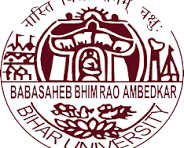

B.R.A. Bihar University, Muzaffarpur
| Paper Code | Paper Title | Internal Marks | External Marks | Total |
|---|---|---|---|---|
| BCA-101 | Mathematical Foundation | 20 | 80 | 100 |
| BCA-102 | Computer Fundamentals | 20 | 80 | 100 |
| BCA-103 | Business Communication & Information System | 20 | 80 | 100 |
| BCA-104 | C Programming | 20 | 80 | 100 |
| BCA-105 | Lab on DOS & Windows | 20 | 80 | 100 |
| BCA-106 | Lab on C | 20 | 80 | 100 |
| TOTAL MARKS | 120 | 480 | 600 |
| Paper Code | Paper Title | Internal Marks | External Marks | Total |
|---|---|---|---|---|
| BCA-201 | Discrete Mathematics | 20 | 80 | 100 |
| BCA-202 | Computer Architecture | 20 | 80 | 100 |
| BCA-203 | Data Structure through C | 20 | 80 | 100 |
| BCA-204 | System Analysis and Design | 20 | 80 | 100 |
| BCA-205 | Lab on MS-Office | 20 | 80 | 100 |
| BCA-206 | Lab on Data Structure through C | 20 | 80 | 100 |
| TOTAL MARKS | 120 | 480 | 600 |
| Paper Code | Paper Title | Internal Marks | External Marks | Total |
|---|---|---|---|---|
| BCA-301 | Fundamentals of Management & Business Accounting | 20 | 80 | 100 |
| BCA-302 | Database Management System | 20 | 80 | 100 |
| BCA-303 | Object Oriented Programming using C++ | 20 | 80 | 100 |
| BCA-304 | Numerical Methodology | 20 | 80 | 100 |
| BCA-305 | Lab on DBMS (SQL/MS-ACCESS) | 20 | 80 | 100 |
| BCA-306 | Lab on C++ | 20 | 80 | 100 |
| TOTAL MARKS | 120 | 480 | 600 |
B.R.A. Bihar University, Muzaffarpur
| Paper Code | Paper Title | Internal Marks | External Marks | Total |
|---|---|---|---|---|
| BCA-401 | Java Programming | 20 | 80 | 100 |
| BCA-402 | Computer Graphics & Multimedia | 20 | 80 | 100 |
| BCA-403 | Operating System & Linux | 20 | 80 | 100 |
| BCA-404 | Software Engineering Principles | 20 | 80 | 100 |
| BCA-405 | Lab on Java Programming | 20 | 80 | 100 |
| BCA-406 | Lab on Computer Graphics & Linux | 20 | 80 | 100 |
| TOTAL MARKS | 120 | 480 | 600 |
| Paper Code | Paper Title | Internal Marks | External Marks | Total |
|---|---|---|---|---|
| BCA-501 | Relational Database Management System | 20 | 80 | 100 |
| BCA-502 | Artificial Intelligence through Python Programming | 20 | 80 | 100 |
| BCA-503 | Web Technology (HTML, Java Script, CSS) | 20 | 80 | 100 |
| BCA-504 | Computer Network, Security and Cyber Law | 20 | 80 | 100 |
| BCA-505 | Lab on Oracle | 20 | 80 | 100 |
| BCA-506 | Lab on Python Programming & Web Technology | 20 | 80 | 100 |
| TOTAL MARKS | 120 | 480 | 600 |
| BCA 601:- Project Report | : | 100 marks |
| BCA 602:- Seminar Presentation | : | 50 marks |
| BCA 603:- Viva – Voce | : | 50 marks |
TOTAL MARKS = 3200
Pattern of Question Paper:-
There will be ten long answer type questions out of which students will have to answer 5 questions. Each question will carry equal marks.
Duration of Exam: 3 Hours for each Theory and Practical Paper
Page-2B.R.A. Bihar University, Muzaffarpur
Total Lectures = 50
Unit-I: Differential Calculus: Successive Differetiation, Leibnitz Theorem, Expansion of function of one variable in Taylor's and Meclaurin's infinite series, Maxima and minima of functions of one variable, Partial Derivatives, Euler's theorem, change of variables, Total differentiation, Taylor's series in two variables, Maxima and Minima of two variables.
Unit – II: Integral Calculus: Definite integral and its application for area, length and volume, multiple integrals, change of order of integration
Unit – III: Differential Equation: First degree and first order differential equation: Higher order differential equation with constant coefficients, Linear partial differential equation of first order P.D.E. of higher orders with constant coefficients.
Unit – IV: Matrix Algebra: Elementary transformation, inverse of a matrix by row operation, rank, solution of a system of linear simultaneous equation by matrix method, Eigen values and Eigen Vectors, Cayley Hamilton theorem, Quadratic forms.
Note: Stress should be given on the development of ideas. Proofs of theorems and derivation of formulae are not required.
Text Books:
Total Lectures = 50
Unit – I: Introduction to Computers:
Brief History of Development of Computers, Computer System Concepts & Characteristics, Capabilities and Limitations of Computers; Type of Computers- Analog, Digital, Hybrid, General, Special Purpose, Macro, Mini, Mainframe, Super; Generations of Computers, Type of PCs: - Desktop, Laptop, Notebook, Palmtop, Workstations etc and their characteristics
Unit- II
Computer organization and Working:- Basic Components of a Computer System: - CPU, Memory-RAM, ROM, EPROM, PROM, and other types of Memory.
B.R.A. Bihar University, Muzaffarpur
Unit-III
Input Devices: Keyboard, Mouse etc.; Output Devices: Monitors: Characteristics and type of monitors, Printers: Daisy Wheel, Dot Matrix, Ink Jet, Laser, Line Printer. Plotter, Sound Card and Speakers, Projectors
Storage Devices: Storage Fundamentals: - Primary versus Secondary Data Storage and retrieval method- Sequential, Direct, Index Sequential.
Various storage Device:- Magnetic Tape, Magnetic Discs, Cartridge Tape, Hard Disk Drives, Optical Disks, CD, DVD, Zip Drive
Unit – IV
Computer Software: Need, Types of software: System Software and application Software
System Software: Operating System, Utility Program, Programming Languages, Assemblers, Compilers and Interpreters
Operating System:- Functions type- Batch, Single, Multiprogramming, Multiprocessing, Programming Language: Machine Level, Assembly, High Level, 4GL, their merits and demerits,
Application Software: Word processing, Spreadsheet, Presentation Graphics, Database Management Software, Characteristics, Usages and Examples and areas of Application of each of them.
Unit- V
Algorithms, Flowcharts: Symbols, Rules for making Flowcharts, types of flowcharts, advantages and disadvantages; Pseudo Codes, Decision Tree, Decision Table, System Flowchart.
Unit- VI
Programming Techniques- Top-Down, Bottom-Up, Modular, Structured- Features, Merits and demerits, Comparative Study.
Programming Logic- Simple, Branching, Looping, Recursion.
Introductory concepts of Computer Security and Virus
Text Books:
Total Lectures = 50
Unit-I: Meaning and Process of Communication, Barriers to communication, Verbal Communication and non-verbal communication.
Business Communication and its importance in business organisation. Listening, Reading, Writing skills.
Unit – II: Principles of Letter Writing, Business Letters: Quotations, Orders, Tenders, Sales Letters, Complaints, Claim and Adjustment Letters, and Collection Letters, Social Correspondence: Letters of congratulation, Invitations, Introduction, Recommendation, Condolence, Conveying Acceptance and regrets, etc., Summarisation, Punctuation.
Meeting, Interview and Group Communication, Drafting of Notice, Agenda, and minutes of company meeting, Report writing and Proposal
B.R.A. Bihar University, Muzaffarpur
Unit – III: Office procedure: Receipt and Dispatch of mail, Filing and Indexing Systems, Classification of mail. E-mail, On-line meeting, On-line interviews.
Forms of Oral Communication – Group Discussion, Debate, Extempore, Presentation, Seminar and Conference
Unit-IV: Data and information, Characteristics, sources and types of information. Importance of information for Managers, Value of Information, Information economics, Role of Computers.
Unit – V: Concept, role and importance of Management Information System (MIS), Concept of system, characteristics and types of system, Information needs and management levels – OAS,TPS, MIS,DSS. Role of OAS in organisations.
Unit – VI: MIS and Decision making concepts, Herbert-Simon model of Decision Making. Concept and philosophy of DSS, MIS Project Planning
Text Books:
Total Lectures = 50
Unit - I:
1.1 Structures of 'C' Programming Language,
1.2 Elements of C Programming
1.3 Algorithms and flowcharts (Real Life Examples), Exercises
2.1 C Tokens , Keywords, Identifiers, Variables, Constant
2.2 Data Types
2.3 Operators
2.4 Types of operators
Unit – II:
3.1 Decision Making: if, if-else, GOTO, Nesting, Switch Statements.
3.2 Looping: for, Nesting of for-loop, While loop, do-while loop
4.1 Array: One Dimensional
4.2 Two Dimensional
5.1 Concept of header files: Pre-processor directives: #include, #define
Unit – III:
6.1 Functions: User Defined Functions
6.2 Nesting, Recursion
6.3 Function with Array
6.4 Parameter Passing
6.5 Call by value
6.6 Call by reference
B.R.A. Bihar University, Muzaffarpur
Unit – IV:
7.1 String Handling: String Manipulation
7.2 String Handling Functions.
Unit – V:
8.1 Structure
8.2 Structure Array
9 Pointers: Pointer of Array, Structure Pointer
Unit – VI:
10.1 File Handling
10.2 Reading and Writing a File
Text Books:
Total Lab Classes = 60
Features of MS Windows, Desktop, creation of folders and shortcuts, icons, features of Windows explorer, Internet Explorer, Windows Accessories(Paint, Notepad etc., Windows Media Player, Internet Browsers), control Panel, Taskbar.
Familiarisation with MS packages – Word, Excel, PowerPoint
Disk Operating System (DOS)
DOS commands
Internal: DIR, MD, CD, RD, COPY, DEL, VOL, DATE, TIME, CLS, PATH, TYPE, PROMPT etc.
External: CHKDSK, XCOPY, PRINT, DISKCOPY, DISKCOMP, DOSKEY, TREE, MOVE, LABEL, APPEND, FORMAT, SORT, FDISK, BACKUP, RESTORE, EDIT, MODE, ATTRIB, HELP, SYS etc.
Executable vs. non-executable files in DOS.
B.R.A. Bihar University, Muzaffarpur
Total Lab Classes = 60
Sample Exercise1: Basics
Write programs to: print sample strings like "hello world", "Welcome to C Programming" with different formats using escape sequences, print different data types in 'C' and their ranges, initialize, assignment & printing variables of different data types.
Exercise2: Operators
i) Write a Program to demonstrate arithmetic operators. (+, -, *, /, %)
ii) Demonstrate logical operators.(logical AND, logical OR) ii) read radius value from the keyboard and calculate the area of circle and print the result in both floating and exponential notation.
iii) Calculate simple interest. iv) Convert temperature (Fahrenheit – Centigrade and vice-versa)
Exercise3: Operators
i) Write a Program to demonstrate relational operators.(,<=,>=,==,!=) ii) Check equivalence of two numbers using conditional operator. Iii) Demonstrate pre increment and post increment.(++a, a++ where a is a value to be initialized) iv) Demonstrate pre decrement and post decrement.(--a, a-- where a is a value to be initialized)
v) Computing the volume of sphere, cone and cylinder assume that dimensions are integer's use type casting where ever necessary.
Exercise4: Decision Statements
i) Write a Program to read marks of a student in six subjects and print whether pass or fail (using if-else).
ii) Calculate roots of quadratic equation (using if-else). iii) Calculate electricity bill. Read starting and ending meter reading. The charges are as follows. No. of Units Consumed Rate in(Rs) 1-100 1.50 per unit 101-300 2.00 per unit for excess of 100 units 301-500 2.50 per unit for excess of 300 units 501-above 3.25 per unit for excess of 500 units
Exercise 5: Switch operations
i) Write a Program to perform arithmetic operations using switch case. ii) Display colors using switch case (VIBGYOR). iii) Display vowels and consonants using switch case.
iv) Display names of days in a Week using switch case.
Exercise 6: Basic Loop operations
Do the Following Programs Using for, while, do-while loops.
i) Write a program to calculate sum of individual digits of a given number. ii) Check whether given number is palindrome or not. Iii) Print prime numbers in the given range. iv) Display multiplication tables from 1 to 10 except 3 and 5.
Exercise 7: Advanced loops
i) Write a program to print the Fibonacci series for given 'N' value.
ii) Check whether a given number is a Fibonacci number or not. iii) Read 2 numbers x and n then compute the sum of the Geometric Progression. 1+x+ x2 +x3 + - - - - - - - +xn iv) Print the following formats. 1 * 1 2 * * 1 2 3 * * * 1 2 3 4 * * * *
Exercise 8: 1-D arrays
i) Write a program to store 10 elements in the 1-D array and print sum of the array. ii) Print minimum and maximum elements in the 1-D array. iii) Count no. of positive numbers, negative numbers and zeros in the array. iv) Search the given element by using linear search. v) Sort the given elements using bubble sort technique.
B.R.A. Bihar University, Muzaffarpur
Exercise 9: 2-D arrays
i) Perform matrix addition and matrix subtraction. ii) Perform matrix multiplication by checking the compatibility. iii) Print the transpose of a matrix.
Exercise 10: Strings
i) Write a program to perform various string manipulations using built-in functions. ii) Print the given strings in ascending order. iii) Verify the given string is palindrome or not (without built-in functions, with using built-in functions). iv) Concatenate two strings using arrays.
Exercise 11: Math Functions and I/O Fucntions
i) Write a program to read values from keyboard and find the values using abs(), sqrt(),floor(), ceil() and pow().
ii) Read and display a value using getch() and putch(). iii) Read and display a value using getchar(), putchar(),gets() and puts().
Exercise 12: Functions
i) Write a program to find sum of two numbers using functions. ii) Find product of two numbers using functions without arguments, without return type. iii) Find difference of two numbers using functions without arguments, with return type. iv) Find sum of two numbers using functions with arguments &without return type. v) Find product of two numbers using functions with arguments, with return type.
Exercise 13: Functions and Recursion
i) Write a program to swap two numbers using a) Call By Value B) Call By Reference.
ii) Calculate factorial, gcd using recursion and non-recursion functions. iii) Perform arithmetic operations using pointer. iv) Matrix addition using pointers.
Exercise 14: Structures
i) Write a program to create structure for an account holder in a bank with following Fields: name, account number, address, balance and display the details of five account holders.
ii) Find total marks of individual student and average marks for 10 students using structures.
iii) Create structure called traveler and members of structure are train no, coach no, seat no, source, destination , gender, age, name and departure date. iv) Illustrate passing an entire structure to a function.
Exercise 15: File operations using command line arguments
i) Write a program which copies the contents of one file to another file using command line arguments.
ii) Reverse the first n characters in a file use command line arguments.
A Mini Project
Page-8B.R.A. Bihar University, Muzaffarpur
Total Lectures = 50
Unit – I: Set , Relation and Function: Notation, Inclusion and Equality of Sets, Power Set, Operations on set, Venn Diagram, Relation, Domain and range, Properties of binary relation in a set, relation matrix, digraph, Equivalence Relation, Partition and covering of a set. Definition and types of Functions, Composition of function, Inverse function. [22 Lect.]
Unit – II: Algebraic Structures: Definitions and illustrative examples of semi-groups, monoids, Groups, Subgroups, Ring.
Unit – III: POSET and Lattice- Partial Ordering, partially ordered set, chain, Maximal, Minimal, Lub and Glb, Hasse Diagram
Unit - IV: Lattice: Definition of lattice and its properties, Sublattice, distributive and complemented lattice [14 Lect.]
Unit – V: Graph Theory: Definition of graph and types, Directed and undirected graph, path, walk and circuit, Regular graph, Tree.
Text Books:
Total Lectures = 50
Unit-I
Unit-II
Unit-III
B.R.A. Bihar University, Muzaffarpur
Unit-IV
Unit-V
Text Books:
Total Lectures = 50
Unit - I: Introduction:
Array, Function, Pointer and Structure.
Unit - II: Recursion:
Recursion vs Looping, Recursive Functions.
Unit - III: Sorting & Searching:
Sorting: Selection, Bubble, Insertion, Heap and Quick sorting.
Searching: Linear and Binary searching.
Unit – IV: Linked List:
Self referential structure, Dynamic memory allocation.
Single Linked List:
Addition, Deletion, Insertion, Searching of nodes.
Double Linked List:
Addition, Deletion, Insertion, Searching of nodes.
Circular Linked List:
Addition, Deletion, Insertion, Searching of nodes.
Unit – V: Stack & Queue:
Stack: Implementation using array and linked list. Push and Pop operations.
Queue: Implementation using array and linked list. Add and Delete operations.
Unit – VI: Trees & Graph:
Trees: Binary Trees, Binary Tree Representations, Binary Search Tree
Prefix, Infix and Postfix traversal of tree.
Graph: Concept and representation using matrix.
B.R.A. Bihar University, Muzaffarpur
Text Books:
Total Lectures = 50
Unit – I: Importance of System Analysis and Design, Concept of System, characteristics and types of system, System Development Life Cycle - waterfall model, Prototype development strategy, Software Crisis, Audit Trail, Role and Attributes of System Analyst.
Unit – II: Sources of Project request, Project Selection, Preliminary Investigation, Feasibility Study, types of feasibility study, Cost and benefit analysis.
Systems Analysis, Requirements determination, Structured Analysis, System Requirements Specification (SRS), Analysis Tools, Data Dictionary, HIPO, Decision Tree, Decision Table, Warnier-Orr Diagram, ERD, Data Flow Design (DFD).
Unit – III: System Design, Design process, constraints, Input and control Design, Validation checks, concept and types of Form, Form Design, Output Design, File Design: Types of File- Master File, Transaction File, Table / Reference File, Report File.
Unit – IV: Software Quality and Testing: Quality concept, Testing and Testing objectives, Black Box and White Box testing, Unit testing, integration testing, system testing
Unit – V: Hardware and Software Acquisition and selection criteria, system conversion and conversion plan, Site preparation, training, Maintenance and types of maintenance.
Unit – VI: Management Information System: Definition, objectives and role in organisation and for managers. Information system at different levels of organisation/management – OAS,TPS,MIS,DSS. Components of MIS, Failure and success of MIS.
Text Books:
B.R.A. Bihar University, Muzaffarpur
Total Lab Classes = 60
Microsoft Word: Introducing Word, Entering and Editing Text, Formatting Text, Formatting Pages, Creating Tables; Special Word Techniques, Word and the Web.
Microsoft Excel: Introducing Excel, Entering Data and Formulas, Structuring the Sheet, Formatting the Sheet, Using Excel Charts, Excel Database Techniques, Special Excel Techniques, Excel.
Microsoft PowerPoint: Introducing PowerPoint, Building a Presentation, Outlining the Presentation, Creating Text Slides, Creating Chart Slides, Formatting Charts, Creating Org Chart and Tables, Customizing a Presentation, Drawing on Slides, Creating Slide Shows, Animation effects.
Text Books:
Total Lab Classes = 60
Programs in C related to following topics:
i) array - one and two dimensions. ii) function - passing variable and array to a function.
iii) pointer and function - call by address/reference. iv) structure such as structure to represent a date, point, time etc. v) Recursive functions.
selection sorting, bubble sorting, insertion sorting, heap sorting, and quick sorting of elements of an array.
menu based operations on single linked list, menu based operations on double linked list, menu based operations on circular linked list.
stack and its operations, queue and its operations.
insertion of node in binary search tree.
traversal of binary search tree nodes in prefix, infix and postfix order.
A Mini Project
Page-12B.R.A. Bihar University, Muzaffarpur
Total Lectures = 50
Unit – I: Concept: Nature, Functions of Managers, Management: Arts Vs Science, Evolution of Management Thoughts, Functions of Management.
Unit II:- Types of Control, Steps involved in Control Process, Meaning and importance of the study of Organisational Behaviour. Improving inter-personal effectiveness, inter-personal communication [6 Lect.]
Unit – III: Introduction of Accounting- Basics of Accounting- Meaning of Accounting and Accounting Cycle, Users of Accounting Information and Their Needs, Objectives, Types of Accounting Information, Advantages, Limitations, and Branches of Accounting, Basic Accounting Terminology,
Unit-IV: Double Entry System of Book Keeping, Accounting and Economic Concept of Income, Computation of Accounting Income and economic Income.
Unit – V: Journalising, Posting and Balancing
Financial Statements- Meaning, Usefulness, Elements of Financial Statements, Manufacturing Accounting, Trading Account, Profit & Loss Account, Balance Sheet (Position Statement), Distinction Between Manufacturing Account and Trading Account, Trial Balance.
Unit-VI:- Use of Computers in Accounting – Meaning, Capability and Role of Computers in Accounting, Computer Terms
Text Books:
Total Lectures = 50
Unit - I Introduction: Database and Database Users, Characteristics of the Database Approach. Structure, Function and Components of DBMS, Different people behind DBMS, Advantages of using DBMS. Database System Concepts and architecture: Data Models, Schemas, and Instances. DBMS 3-Level ANSI/SPARC Architecture and Data Independence. Types of DBMS.
Unit - II Data Models: Entity-Relationship Model: Entity types, Entity sets, attributes, and Keys, ER Model Concepts, Notation for ER Diagrams, Reducing E-R Diagrams to tables. Abstraction-Generalisation, Specialisation, and Aggregation. Cardinality and Modality. Exercises
Page-13B.R.A. Bihar University, Muzaffarpur
Unit – III: Relational Data Model: Structure and properties of relational model, Relation, Attribute, Tuple, Keys: Super, Primary, Candidate, Alternate, and Foreign keys. Relational Algebra: Union, Intersection, Difference, Cartesian Product, Division, Join.
Introduction to Network and Hierarchical Data models
Unit - IV Functional Dependencies and Normalization for Relational Database: Functional Dependencies and its types, Axioms for FDs, Decomposition Rules, Different Normal Forms: 1NF, 2NF, 3NF, BCNF, Multi-valued dependencies – 4NF and 5NF, DKNF
Unit – V Relational Database Language: Data definition in SQL, DDL Commands, DML Commands, Queries in SQL- Simple Queries, Nested Queries, Aggregate Functions, Insert, Delete and Update, Views in SQL, Specifying General Constraints as Assertions, specifying indexes.
Unit–VI: Transaction Processing Concepts: Introduction, Transaction and System Concepts, Desirable (ACID) properties of transaction, Recovery Techniques: Log-based, Check-points and Shadow paging, Serializability of schedules, Problems with concurrency, Concurrency Control, Locking Techniques, Lock types, Granularity of Locking, Concurrency Control based on time stamp ordering.
Text book: 1. Remez Elmaseri and Shamkant B. Navathe, "Fundamentals of Database Systems", 5th Ed., Pearson Education, 2007.
Total Lectures = 50
Unit - I:
Object oriented programming concepts Why do we need object oriented.
C++ Programming basics: Output using cout. Directives. Input with cin.
Type bool, The setw manipulator, Type conversions.
Unit - II
Functions: Returning values from functions, Reference arguments, Overloaded function, Inline function, friend function, Static function, Default arguments, Returning by reference.
Unit - III:
Object and Classes: Making sense of core object concepts (Encapsulation, Abstraction, Polymorphism, Classes, Messages Association, Interfaces) Implementation of class in C++, C++ Objects as physical object, C++ object as data types, constructor, Object as function arguments, The default copy constructor, returning object from function, Structures and classes, Classes objects and memory static class data, Const and classes.
B.R.A. Bihar University, Muzaffarpur
Unit - IV:
Arrays and string arrays fundamentals, Arrays as class Member Data: Arrays of object, string, The standard C++ String class, Operator overloading: Overloading unary operations, Overloading binary operators, data conversion, pitfalls of operators overloading and conversion keywords. Explicit and Mutable.
Unit - V:
Inheritance: Concept of inheritance, Derived class and based class, Derived class constructors member function, inheritance in the English distance class, class hierarchies, inheritance and graphics shapes, public and private inheritance, aggregation: Classes within classes, inheritance and program development, Virtual Function: Virtual Function
Unit - VI:
Pointer: Addresses and pointers. The address of operator and pointer and arrays. Pointer and Faction pointer and C-types string. Memory management: New and Delete, pointers to objects, debugging pointers. Assignment and copy initialization, this pointer, dynamic type information. Streams and Files: Streams classes, Stream Errors, Disk File I/O with streams, file pointers, error handling in file I/O with member function, overloading the extraction and insertion operators, memory as a stream object, command line arguments and printer output.
Templates and Exceptions: Function templates, Class templates Exceptions
Text Books:
Total Lectures = 50
Unit – I: Solution of a nonlinear algebraic ad transcendental equations:Bisection method, False position, Newton Raphson method, Iterative Method, Lin Bairstow's method.
Unit–II: Solution of Simultaneous linear equation: Gauss elimination, Gauss Jordan, LU decomposition, Crout's method, Jacobi, Gauss Seidel, Relaxation method, Inverse of a matrix using iterative method.
Unit – III: Finite differences: Introduction and different types of operators and relation between them. Factorial notation and Polynomial in factorial notation.
Unit – IV: Interpolation: Introduction Newton forward and backward interpolation ,Newton Divided differences, Lagrange's Interpolation, Central difference interpolation formula, Gauss forward and backward interpolation formula. Numerical differentiation.
Unit – V: Numerical Integration: Trapezoidal and Simpson's rules, weddle's rule and their order of error.
Unit – VI: Solution of ordinary differential equation:Euler's method, Euler's modified method, Runga Kutta method, Taylor's Series method, Picard's method, Adams-Bashforth method..
Note: Students may use scientific calculator for numerical calculations of various functions (Log, Exponential, Trigonometrical, etc.)
Text Books:
B.R.A. Bihar University, Muzaffarpur
Total Lab Classes = 60
SQL Commands: DDL: CREATE, ALTER, DROP, INDEX
DML: insert, delete, update, and commands related to queries on tables – simple and nested queries- Basic data retrieval; condition specification; order by; Uses of logical operators – and, or, not; Range searching; Pattern matching; arithmetic and aggregate functions; Joining multiple tables – (Equi joins); set manipulations – Any, All, In, Exists, Union, Intersect, Minus, grouping command. Creating views.
DCL: GRANT and REVOKE
TCL: COMMIT, ROLLBACK and SAVEPOINT
Text Books:
Total Lectures = 60
Program in C++ related to following topics:
Input/ Output using cin/ cout. Decision making using if else, switch case, conditional operator Looping using while, do while and for. Array - single and multi dimension. Function - simple, recursive, call by value and reference, overloading, default argument value. Class - Constructor, Member Functions. Operator overloading. Friend function. Inheritance - Single, Multilevel, Multiple.
Virtual Function. Stream handling.
1. Simple C++ Programs to Implement Various Control Structures.
Ex 1A: if .. else statement
An electricity board charges the following rates to domestic users ti discourage large consumption of energy: FOR the first 100 units - 50P per unit, For next 200 units - 80P per unit Beyond 300 units - 90P per unit. All users are charged a minimum of Rs.50.00. if the total amount is more than Rs.300.00 then an additional surcharge of 15% is added.Write a C++ program to read the names of users and number of units consumed and print out the charges with names
Ex 1B: switch.. case statements and do .. while loop
An election is contested by five candidates. The candidates are numbered 1 to 5 and a voting is done by marking the candidate number in a ballot paper. Write a C++ program to read the ballot and count the votes cast for each candidate using an array variable count. In case, a number read is outside the range 1 to 5 the ballot should be considered as a 'spoilt ballot', and the program should also count the number of spoilt ballots
Ex 1C: for loop - Write a C++ program to print the different Pyramid structures
Ex 1D: while loop Write a C++ program to print the Fibonacci series 0 1 1 2 3 5 8 13 .... By getting number of number to be displayed is given as input Eg. 5 is input value means it should print first 5 numbers 0 1 1 2 3:
B.R.A. Bihar University, Muzaffarpur
2. Programs to Understand Structure & Unions.
Ex 2A: Structure Create a Structure called employee with the following details as variables within it.
1. Name of the employee, 2. Age, 3. Designation, 4. Salary
Write a C++ program to create array of objects for the structure to access these and print the name, age, designation and salary
Ex2B: Union Create a Union called student with the following details as variables within it.
1. Name of the student, 2. Age, 3. Year of study, 4. Semester, 5. 5 different subject marks in array. Write a C++ program to create object for the union to access these and print the Name, age, year, semester and grade according to their percentage of marks scored. 90 % and above – S grade, 80% to 89% -- A grade, 70% to 79% -- B grade, 50% to 69% -- C grade 50% to 59% -- D grade, <50% -- F grade
3. Programs to Understand Pointer Arithmetic.
Ex 3: Write a C++ program to find the number of vowels present in the given character array using pointer arithmetic.
Ex 4A: Write a C++ program to print the given number in reverse order. Use functions with return type and without return type for reversing the number.
Ex: given number is 2345 , output should be 5432
Ex 4B: Write a C++ program to find the sum of factorial of a given number using recursive function
Ex 5: Write a C++ program to perform different arithmetic operation such as addition, subtraction, division, modulus and multiplication using inline function
6. Programs to Understand Different Function Call Mechanism.
a. Call by reference and Call by value
Ex 6: Write a C++ program to swap two number by both call by value and call by reference mechanism, using two functions swap_value() and swap_reference respectively , by getting the choice from the user and executing the user's choice by switch-case.
7. Programs to Understand Storage Specifiers.
Ex 7: Write a C++ program to demonstrate the static and non static variable usage defining them within a function.
8. Constructors & Destructors.
Ex 8: Create a class for counting the number of objects created and destroyed within various block using constructor and destructors.
9. Use of "this" Pointer Using class
Ex 9: Write a C++ program to create three objects for a class named pntr_obj with data members such as roll_no & name . Create a member function set_data() for setting the data values and print()member function to print which object has invoked it using 'this' pointer.
10. Programs to Implement Inheritance and Function Overriding.
Ex 10A: Write a C++ program with different class related through multiple inheritance and demonstrate the use of different access specifiers by means of member variables and member functions.
Ex 10B: Write a C++ program to explain virtual function (polymorphism) by creating a base class c_polygon which has virtual function area(). Two classes c_rectangle and c_traingle derived from c_polygon and they have area() to calculate and return the area of rectangle and triangle respectively.
11. Programs to Overload Unary & Binary Operators as Member Function & Non Member Function.
Ex 11 A: Write a C++ program to count the number of persons inside a bank, by increasing count whenever a person enters a bank, using an increment(++) operator overloading function, and decrease the count whenever a person leaves the bank using a decrement(--) operator overloading function inside a class
Ex 11 B: Write a C++ program to create two objects of a class called company and add their data members using an operator overloaded function for '+' operator and '-'operator
12. Programs to Understand Friend Function & Friend Class.
a. Friend function
b. Friend class
Ex 12 B: Write a program to accept the student detail such as name and 3 different marks by get_data() method and display the name and average of marks using display() method. Define a friend class for calculating the average of marks using the method marrk_avg().
13. Programs on Class Templates
A Mini Project
Page-17B.R.A. Bihar University, Muzaffarpur
Total Lectures = 50
Unit – I: Overview of Java Language
C++ Vs JAVA, JAVA and internet and WWW, JAVA support systems, JAVA environment.
JAVA program structure, tokens, statements, JAVA virtual machine, constants & variable, data types, declaration of variable, symbolic constants, type casting.
Operators: Arithmetic, relational, logical assignments, increment and decrement, Conditional bitwise, special, expressions & its evaluation
Decision Making and Branching
If statement, if...else statement, Nesting of if...else statements, else...if ladder, switch, ? operators, loops while, do, for, jumps in loop, labelled loops.
Unit – II: Classes, Objects and Methods
Defining a class, adding variables and methods, creating objects, accessing data members, constructors, methods overloading, static members, nesting of methods.
Inheritance: Extending a class, overriding methods, final variables and methods, final classes, finalizer methods, abstract methods and classes, visibility control.
Unit – III: Arrays, String and Vectors
Arrays: One dimensional & two dimensional, Strings, vectors, wrapper classes, defining interfaces, extending interfaces, implementing interfaces, accessing interfaces, variables, system packages, using system packages, naming conventions, creating packages, accessing a package, using package, adding a class to a package, hiding classes.
Unit - IV: Multithreaded programming
Creating threads, extending the threads class, stopping and blocking a thread, life cycle of a thread, using thread methods, thread exceptions, thread priority, synchronization, implementing the runnable interface.
Unit – V: Applet Programming
Local and remote applets, applets Vs applications, writing applets, applets life cycle, creating and executable applet, designing a web page, applet tag adding applet to HTML file, running the applet, passing parameters to applets, aligning the display, DTML tags & applets, getting input from the user.
JDBC- ODBC (Java Database Connectivity)
Text Books:
B.R.A. Bihar University, Muzaffarpur
Total Lectures = 50
Unit- I:
1.1 Introduction, Computer Graphics System, Interactive Graphics.
1.2 Passive Graphics, Application of Computer Graphics.
Unit -II:
2.1 Introduction, Display Devices, Cathode Ray Tube.
2.2 Bit-Mapped Graphics, Graphics Attributes, Refresh Cathode Ray Tubes.
2.3 Random Scan Displays, Raster-Scan Displays , Color CRT Monitors.
2.4 Direct-View Storage Tubes (DVST), Plasma Panel Displays, Thin Film Electroluminescent displays.
2.5 Light Emitting Diode (LED), Liquid Crystal Displays (LCDs), Hard Copy Output Devices.
Unit- III:
3.1 Introduction, Scan Conversion, Digital Differential Analyzer.
3.2 Bresenham's Algorithm, Integer Bresenham's Algorithm.
3.3 General Bresenham's Algorithm, Circle Generation Algorithms, Bresenham's circle generation algorithm, Midpoint Circle Algorithm.
3.4 Ellipse Generation algorithms, Midpoint Ellipse Algorithm, Arc Generation algorithms, Fill Algorithms.
Unit – IV
4.1 Fundamentals of Antialiasing, Dithering,2-D Graphics Transformations, Geometric and Coordinate Transformations.
4.2 Transformation Composition, 2-D View and Clipping, Exterior and Interior Clipping, Viewport Transformation, Polygon Clipping , Text Clipping.
Unit-V:
5.1 Introduction,3-D Graphics Transformations.
5.2 Coordinate Transformations,3-D Projections, Perspective Projection on a Plane with C(0,0,0), Perspective Projection on a Plane with C(a,b,c),Parallel Projections, 3-D Viewing and Clipping, Hidden Lines and Surfaces Scan line Entries (a) (b) (c) (d).
5.3 Importance of Wireframe Models, Demerits of Wireframe Models, Representing a Polygonal Net Model, Bezier Curves and Surfaces, B-Splines.
Unit- VI
6.1 Introduction
6.2 Multimedia Hardware
6.3 Multimedia Software Tools
6.4 Application Areas for Multimedia
6.5 Multimedia Components Hypermedia, Multimedia Technology
B.R.A. Bihar University, Muzaffarpur
Total Lectures = 50
Unit – I: Overview:
Objectives and Functions, Evolution, Achievement.
Unit – II: Process Management:
Process, State, Description, Control.
Unit – III: Process Synchronization:
Mutual Exclusion, Semaphores, Monitors, Message Passing, Readers/Writers Problem.
Unit – IV: Deadlock:
Deadlock Avoidance & Detection, Dining Philosophers Problem.
Unit – V: Memory Management:
Requirements, Partitioning, Paging Segmentation.
Unit – VI: Scheduling:
Uniprocessor Scheduling Algorithms, Multiprocessor Scheduling, Real-Time Scheduling.
Unit – VII: File Management:
File Organization, Directories, Sharing, Record Blocking, Secondary Storage Management.
Unit – VIII: LINUX & SHELL PROGRAMMING
Linux: File/Folder Structure, User Management, Process Management, Commonly used commands.
Shell Programming: Defining variable, Expression, if else fi, case esac, while, until, for loop.
Text Books:
Total Lectures = 50
Unit-I: Introduction to Software Engineering, its emergence; Software characteristics, classification of software; software engineering principles, phases in software engineering.
Software Process, Capability Maturity Model, Process Models: Waterfall, Prototype, Rapid Application Development (RAD), Incremental, Spiral, Component-based Assembly Model, V-Model.
Unit –II: Systems Analysis: Requirements and Specification: Analysis Model, The Requirement Engineering Process, The Software requirement document, Functional & Non functional requirements, Fact Finding Techniques – Meeting (FAST), Interview, Direct Inspection, Documents, Questionnaire, System Requirements Specification (SRS), Data Flow Diagram (DFD), ERD, Cardinality and Modality.
Unit – III: System Design: Design Process, Good Design, Design Principles, Design constraints, Design Quality, System Structuring control models, Modular decomposition, Coupling and Cohesion, Domain Specific architecture, User Interface Design. Object Oriented & function oriented design: Objects, object Classes and inheritance, Object identification.
Page-21B.R.A. Bihar University, Muzaffarpur
Unit – IV: Software Coding: Coding guidelines, code document, structured programming, code inspection. Metrics – Definition, objectives and types of metrics, Size-oriented (LOC-based) and Function - oriented (FP-based) metrics. Reliability and Software Quality: concepts, Factors of good quality software, McCall's Quality Factors, Software Quality Assurance (SQA), FTR, Inspection and Walkthroughs.
Unit – V: Software Testing: Testing basics, Guidelines of testing, characteristics of software test, Test Plan and Test case, software testing strategies, Levels of software testing: Unit testing, integration testing, system testing, acceptance testing. Testing techniques: White box, Black box and Gray box testing. Basis path testing, Flow graph notation, cyclomatic complexity, Equivalence Partitioning, verification & Validation (V & V), Debugging.
Unit – VI: Maintenance and its types. Overview of Computer aided software engineering (CASE)
Text Book:1. Software Engineering: Principles and Practices, Rohit Khorana, Vikas Publ., 2010
Total Lab Class = 60
Exercise - 1 (Basics)
a). Write a JAVA program to display default value of all primitive data type of JAVA
b). Write a java program that display the roots of a quadratic equation ax2+bx=0. Calculate
c) Write a case study on public static void main(250 words)
Exercise - 2 (Operations, Expressions, Control-flow, Strings)
(d) Write a JAVA program using String Buffer to delete, remove character.
Exercise - 3 (Class, Objects)
e). Write a JAVA program to implement class mechanism. – Create a class, methods and invoke them inside main method.
f). Write a JAVA program to implement constructor.
Exercise - 4 (Methods)
a). Write a JAVA program to implement constructor overloading.
b). Write a JAVA program implement method overloading.
Exercise - 5 (Inheritance)
a). Write a JAVA program to implement Single Inheritance
b). Write a JAVA program to implement multi level Inheritance
c). Write a java program for abstract class implementation
Exercise - 6 (Inheritance - Continued)
a). Write a JAVA program give example for "super" keyword.
b). Write a JAVA program to implement Interface. What kind of Inheritance can be achieved?
Exercise - 7 (Exception)
a).Write a JAVA program that describes exception handling mechanism
b).Write a JAVA program Illustrating Multiple catch clauses
Exercise – 8 (Runtime Polymorphism)
a). Write a JAVA program that implements Runtime polymorphism
b). Write a Case study on run time polymorphism, inheritance that implements in above problem
Exercise – 9 (User defined Exception)
a). Write a JAVA program for creation of Illustrating throw
Exercise – 10 (Threads)
a). Write a JAVA program that creates threads by extending Thread class .
b). Write a program illustrating isAlive and join ()
Exercise - 11 (Packages)
a). Create package and call it in another class.
b). Write a JAVA program that import and use the defined package in new package.
Exercise - 12 (Applet)
a).Write a JAVA program to paint like paint brush in applet.
b) Write a JAVA program to display analog clock using Applet.
c) Write a Java program that takes input
B.R.A. Bihar University, Muzaffarpur
Total Lab Classes = 60
A) Computer Graphics & Multimedia
Unit I:
i) Write a Programme to draw a colourful Pixel
ii) Write a Programme to draw a line.
Unit II:
Write Programmes to draw a different shapes
i.) Rectangles ii.) Cirles iii.) Square iv.) Arrow v.) Zooming of Circles vi.) Zooming of Rectangles
Unit III:
i) Write a Programme to draw a Indian Flag
ii) Write a Programme to draw Chess Board
Unit IV:
i) Draw a Line Using Bresenham's Algorithm
ii) Draw a Line Using DDA Algorithm
Unit V:
i). Write a program to fill a polygon using Scan line fill algorithm.
ii) Write programs to apply various 2D transformations on a 2D object (use homogeneous coordinates).
iii) Write programs to apply various 3D transformations on a 3D object (use homogeneous coordinates).
B) UNIX/LINUX
Use of following UNIX/LINUX commands:
cat, cal, ls, mkdir, rmdir, cd, rm, mv, cp, vi, chmod, chown, echo, bc, expr
Shell programs related to following:
Use of shell variables
Use of if else fi statement
Use of case esac statement
Use of while do done statement
Use of until do done statement
Use of for loop
A Mini Project
Page-23B.R.A. Bihar University, Muzaffarpur
Total Lectures = 50
Unit – I
Introduction & features: Concept of RDBMS, Properties of RDBMS, CODD commandments
Table
Unit II
Data constraints
Column level & table level constructions, Null, unique key, default, foreign key reference, CHECK integrity constraints, Defining different constraints on the table, Defining integrity constraints in the alter table command.
Unit III
Computations in Expression Lists used to Select Data
Logical operators, Range searching, Pattern searching, Oracle functions, Grouping data frame table in SQL, Manipulations data in SQL
Joins
Joining multiple tables (equi-joins ), Joining table to itself (self joins) sub queries
Union, intersect & minus clause.
Unit IV
Indexes Views
Creation, updation, destroying, selections of data, Renaming the column of view, Granting permissions, Permission on the objects created by the user, GRANT statement, Object privileges, Referencing the tables to the another user, Revoking the permissions given
Unit V
PL/SQL
Unit VI
Text Books:
B.R.A. Bihar University, Muzaffarpur
Total Lectures = 50
Unit – I: Introduction to Python
1.1 Installation and Working with Python
1.2 Understanding Python variables
1.3 Python basic Operators
1.4 Understanding python blocks
1.5 Declaring and using Numeric data types: int, float, complex
1.6 Using string data type and string operations
1.7 Defining list and list slicing
1.8 Use of Tuple data type
1.9 Conditional blocks using if, else and elif
1.10 Simple for loops in python
1.11 For loop using ranges, string, list and dictionaries
1.12 Use of while loops in python
1.13 Loop manipulation using pass, continue, break and else
1.14 Programming using Python conditional and loops block
Unit – II Python Functions, Modules And Packages
2.1 Organizing python codes using functions
2.2 Understanding Packages
2.3 Powerful Lambda function in python
2.4 Programming using functions, modules and external packages
2.5 Understanding string in build methods
2.6 List manipulation using in build methods
2.7 Dictionary manipulation
Unit – III: Python File Operation
3.1 Reading config files in python
3.2 Writing log files in python
3.3 Understanding read functions, read(), readline() and readlines()
3.4 Understanding write functions, write() and writelines()
3.5 Powerful pattern matching and searching
3.6 Password, email, url validation using regular expression
Unit – IV: Python Exception Handling and Data Base
4.1 Avoiding code break using exception handling
4.2 Safe guarding file operation using exception handling
4.3 SQL Database connection using python
4.4 Creating and searching tables
4.8 Programming using database connections
Artificial Intelligence:
Unit – V: Search
5.1 Uninformed
5.2 Informed
5.3 Mini-Max for Game Playing
Unit – VI:
6.1 Task Planning
6.2 Robot Motion Planning
6.3 Supervised Learning
6.4 Unsupervised Learning
6.5 Reinforcement Learning
Text Books:
B.R.A. Bihar University, Muzaffarpur
Total Lectures = 50
Unit – I: Fundamentals:
WWW, Internet, Web Browsers, Web Servers, URLs, MIME, HTTP.
Unit – II: HTML:
Origins of HTML, Basic syntax, Standard HTML page structure, Text markup, Images, HyperLinks, Lists, Tables and Form.
Unit – III: CSS:
Introduction, Selectors, Font attributes, List attributes, Color, Alignment of text, The Box model, Background images, The <span> and <div> tags.
Unit - IV: Java Script:
Overview, Object notation, Operations, expressions, browser output, keyboard input, Control statements, Object creation, Arrays, Functions, Pattern matching using expressions, error handling, The Document Object Model, Element access, Events and event handling.
Text Books:
Total Lectures = 50
Unit – I: Computer Network:
Introduction: Definition, its use, goals and structure, network architecture, ISO reference model, Network Model, Connecting Devices, TCP/IP, UDP
Network Topology: Topology Design process, connectivity analysis, Delay analysis, Backbone design, Logical Access Design.
Unit – II: Physical Link Layer: Theoretical basis for data communication, Data and signal, Digital and Analog transmission, transmission media, Switching, multiplexing.
Unit – III: Data Link protocols, Data Link controls, Sliding window protocols, Virtual circuits, Routing algorithms, Congestion, Examples of network layers, selected examples, Error detection and correction, Multiple Access, Congestion control, Framing, MAC Sublayer. IPv4, IPv6 Address, ICMP, IGMP
Unit – IV: Network Security:
Introduction: Security Overview, Cyber security fundamentals, Security System design architecture, The OSI Security Architecture tools and techniques, Current Vulnerabilities - Different Security attacks, Countermeasures, Security Services, Model for Network Security.
Symmetric Cipher: Classical Encryption techniques, Symmetric Cipher Model, Block Cipher Design principles – Feistel Structure, DES, Triple DES, Advanced Encryption Standard (AES), Stream Cipher and RC4.
Unit-V:
Public Key Encryption: Message Authentication, RSA Algorithm, Digital Signature.
Network Security Algorithms: Kerberos, X.509, Authentication Services.
System Security: Intrusion Detection, Password management, Virus countermeasure, Firewall.
Unit – VI: Introductory Concept of Cyber Laws: IT Laws, policies and Government Regulations – Global, IT Act – India.
Page-27B.R.A. Bihar University, Muzaffarpur
Text Books:
Total Lab Class = 60
SQL commands-
Create, alter, drop, truncate, rename
Constraints- Primary key, unique, null, foreign key, default, check
Select, insert, update, delete, connect, revoke, grant, rollback, commit
Oracle functions, index, views (creation, deletion, updating, inserting)
Locking, Making Procedure, Making functions, Cursor programs, Triggers programs
Text Books:
B.R.A. Bihar University, Muzaffarpur
Total Lab Class = 60
Python Programming
Programming in Python Lab Practical:
Program 1. Using for loop, print a table of Celsius/Fahrenheit equivalences. Let c be the Celsius temperatures ranging from 0 to 100, for each value of c, print the corresponding Fahrenheit temperature.
Program 2. Using while loop, produce a table of sins, cosines and tangents. Make a variable x in range from 0 to 10 in steps of 0.2. For each value of x, print the value of sin(x), cos(x) and tan(x).
Program 3. Write a program that reads an integer value and prints —leap year‖ or —not a leap year.
Program 4. Write a program that takes a positive integer n and then produces n lines of output shown as follows. For example enter a size: 5 * ** *** **** *****
Program 5. Write a function that takes an integer _n' as input and calculates the value of 1 + 1/1! + 1/2! + 1/3! + ... + 1/n
Program 6. Write a function that takes an integer input and calculates the factorial of that number.
Program 7. Write a function that takes a string input and checks if it's a palindrome or not.
Program 8. Write a list function to convert a string into a list, as in list (_abc') gives [a, b, c].
Program 9. Write a program to generate Fibonacci series.
Program 10. Write a program to check whether the input number is even or odd.
Program 11. Write a program to compare three numbers and print the largest one.
Program 12. Write a program to print factors of a given number.
Program 13. Write a method to calculate GCD of two numbers.
Program 14. Write a program to create Stack Class and implement all its methods. (Use Lists).
Program 15. Write a program to create Queue Class and implement all its methods. (Use Lists)
Program 16. Write a program to implement linear and binary search on lists.
Program 17. Write a program to sort a list using insertion sort and bubble sort and selection sort.
Web Technology:
HTML code for sign up, sign in, forgot password pages.
CSS code to control the appearance of form elements of the HTML page.
JavaScript program to:
A Mini Project
Page-29, 30B.R.A. Bihar University, Muzaffarpur
BCA-601:- Project Report:- A project work will be done by all the students separately or in a group containing 4 or 5 students on a topic assigned by the Guide(any of the faculty of the College). The student will complete their project under the supervision of the Guide and submit the report in hard and soft copy at the time of evaluation.
BCA-602:- Seminar:- A Departmental Seminar will be organised and students will have to present a paper in the seminar.
BCA-603:- Viva:- A viva-voce of 50 Marks will be conducted by the external examiners(appointed by the University/Examination Board) covering the papers studied by students in 1st to 5th Semesters.
...............................
Page-31